IoT & Connectivity — Deep Dive
Three tasks, one ESP32: a self-hosted web server, an MQTT dashboard on Adafruit IO that switches an LED and a relay-driven 230V bulb, and voice automation through IFTTT and Google Assistant.
ESP32 Web Server & HTML LED Control
Objective and problem addressed
Switching a device normally means walking up to it and pressing a button. The objective was to remove that limit: make the ESP32 host its own control page so any phone or laptop on the same Wi-Fi network can turn an LED on or off from a browser. The problem being solved is local remote control with no external app, cloud account or extra hardware. It is the simplest form of an IoT device, because the device itself is the server.
Concept: how an ESP32 web server works
The ESP32 has a built-in Wi-Fi radio and enough memory to run a small HTTP server. After it joins the router, the router gives it an IP address (for example 192.168.1.45). The ESP32 then listens on port 80, the standard HTTP port, and waits for requests. Each URL path (a route) is linked to a function in the sketch.
GET / and the ESP32 replies with an HTML page. Pressing a button on that page sends GET /on or GET /off. The matching handler changes the LED pin and replies with 200 OK and the refreshed page.Request/response path for Task 1
Hardware and software used
| Item | Purpose |
|---|---|
| ESP32 development board | Microcontroller with built-in Wi-Fi; runs the web server |
| LED (onboard, GPIO 2) | Output controlled from the browser |
| 220 Ω resistor + external LED (optional) | Current limiting when using an external LED instead of the onboard one |
| Micro-USB cable | Power and programming |
| Arduino IDE with ESP32 board package | Writing, compiling and uploading the sketch; Serial Monitor for debugging |
| Wi-Fi router (lab network) | Connects the ESP32 and the browser device |
| Browser with DevTools | Control page and checking the HTTP response in the Network tab |
Circuit / wiring diagram and pin connections
The onboard LED needs no wiring. If an external LED is used, the circuit below applies.
External LED circuit (onboard LED is already connected to GPIO 2)
| ESP32 pin | Connected to | Function |
|---|---|---|
| GPIO 2 | LED (via 220 Ω resistor, or the onboard LED) | Digital output, HIGH = ON |
| GND | LED cathode | Common ground |
| USB | Laptop | 5V power and serial upload |
Complete source code (Arduino / ESP32)
#include <WiFi.h>
#include <WebServer.h>
const char* ssid = "YOUR_WIFI_NAME";
const char* password = "YOUR_WIFI_PASSWORD";
const int LED_PIN = 2; // onboard LED
bool ledState = false;
WebServer server(80); // HTTP server on port 80
// Builds the HTML page. The status text changes with the LED state.
String buildPage() {
String s = "<!DOCTYPE html><html><head><meta name='viewport' content='width=device-width,initial-scale=1'>";
s += "<title>ESP32 LED Control</title><style>";
s += "body{font-family:Arial;text-align:center;margin-top:50px}";
s += ".btn{display:inline-block;padding:16px 40px;margin:10px;font-size:20px;color:#fff;text-decoration:none;border-radius:8px}";
s += ".on{background:#16a34a}.off{background:#dc2626}</style></head><body>";
s += "<h1>ESP32 LED Control</h1>";
s += "<p>LED Status: <b>" + String(ledState ? "ON" : "OFF") + "</b></p>";
s += "<a class='btn on' href='/on'>ON</a><a class='btn off' href='/off'>OFF</a>";
s += "</body></html>";
return s;
}
void handleRoot() { server.send(200, "text/html", buildPage()); }
void handleOn() {
ledState = true;
digitalWrite(LED_PIN, HIGH);
Serial.println("LED ON");
server.send(200, "text/html", buildPage());
}
void handleOff() {
ledState = false;
digitalWrite(LED_PIN, LOW);
Serial.println("LED OFF");
server.send(200, "text/html", buildPage());
}
void setup() {
Serial.begin(115200);
pinMode(LED_PIN, OUTPUT);
digitalWrite(LED_PIN, LOW);
WiFi.begin(ssid, password);
Serial.print("Connecting to Wi-Fi");
while (WiFi.status() != WL_CONNECTED) { delay(500); Serial.print("."); }
Serial.println("\nWi-Fi connected");
Serial.print("IP address: ");
Serial.println(WiFi.localIP());
server.on("/", handleRoot);
server.on("/on", handleOn);
server.on("/off", handleOff);
server.begin();
Serial.println("Web server started");
}
void loop() {
server.handleClient(); // check for new browser requests
}What the important parts do
WebServer server(80)creates the HTTP server on port 80.server.on("/on", handleOn)maps a URL path to a function. This is the routing table.digitalWrite(LED_PIN, HIGH/LOW)is the only line that touches the hardware.server.handleClient()inloop()must run continuously, otherwise requests are never processed.
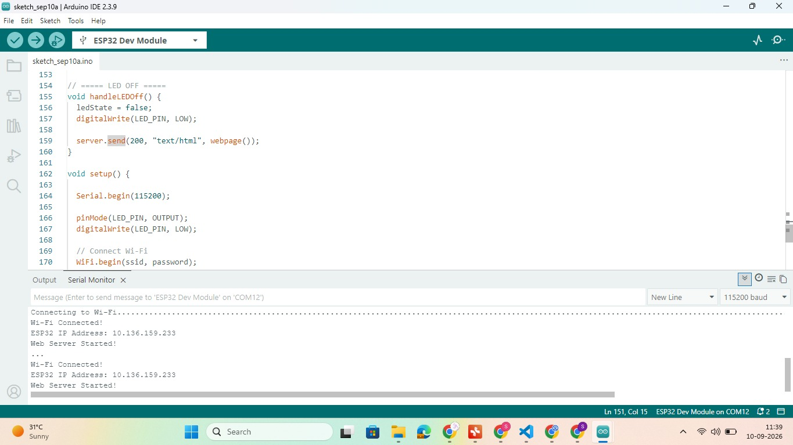
HTML interface and how it sends commands to the ESP32
The page is plain HTML returned by buildPage(). It contains a heading, a status line and two links styled as buttons. No JavaScript is needed. Each button is an <a href="/on"> or <a href="/off"> link, so clicking it makes the browser send an HTTP GET request to that path on the ESP32.
GET /on → ESP32 runs handleOn() → pin 2 goes HIGH → ESP32 replies 200 OK with a new page showing "LED Status: ON".<h1>ESP32 LED Control</h1>
<p>LED Status: <b>ON</b></p>
<a class="btn on" href="/on">ON</a> <!-- sends GET /on -->
<a class="btn off" href="/off">OFF</a> <!-- sends GET /off -->Screenshots, photographs and demo video
Web interface screenshots
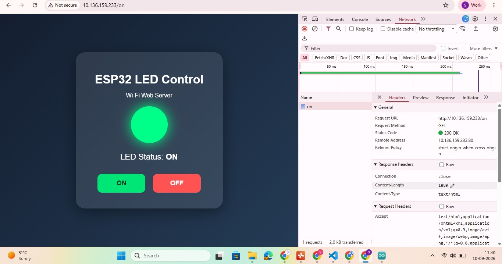
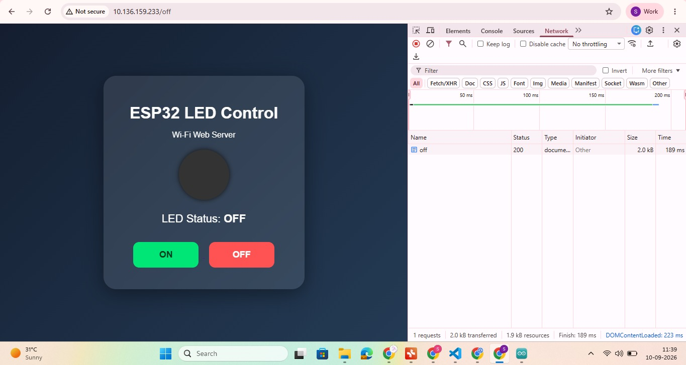
Physical setup
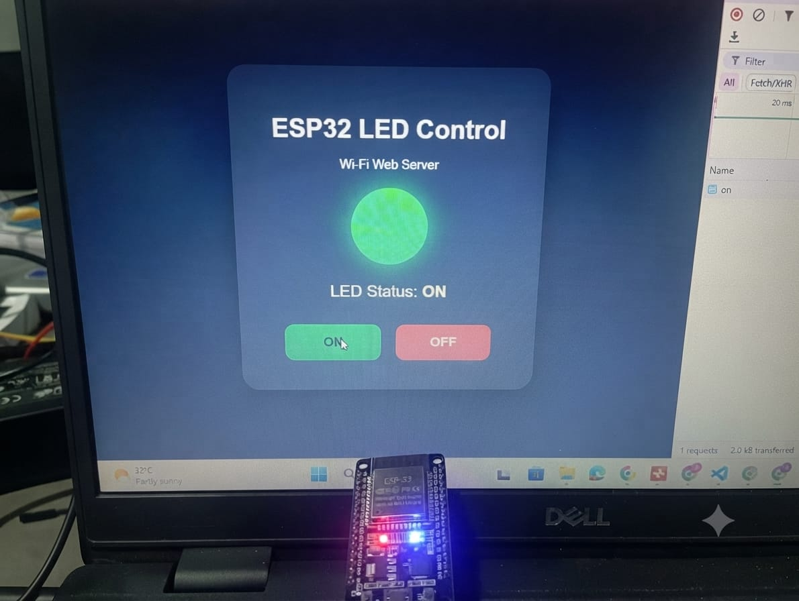
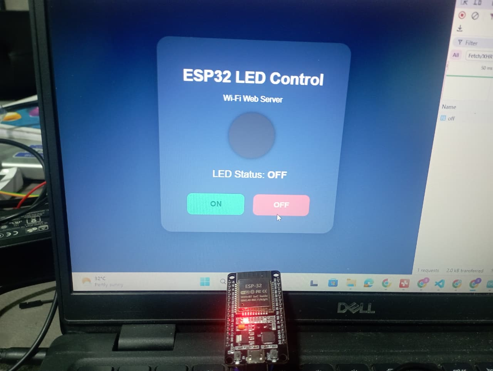
Demo video: LED ON/OFF from the webpage
Full demo — controlling the ESP32 LED live from the web server page
Problems encountered and solutions
| Problem | Cause | Solution |
|---|---|---|
| Board stayed on "Connecting…" dots | Wrong SSID/password, or a 5 GHz network (ESP32 supports 2.4 GHz only) | Rechecked credentials and connected to the 2.4 GHz network |
| Page would not open in the browser | Laptop and ESP32 were on different networks; IP read from an old session | Read the IP from the Serial Monitor after every reset and used the same network |
| Upload failed with a connection error | Wrong board/port selected | Selected the ESP32 Dev Module and the correct COM port |
| Status text lagged behind the LED | Page was built before the state variable updated | Updated ledState first, then built the response page |
Reflection
A microcontroller can act as a web server, and a URL path can be treated as a command. This task made HTTP concrete for me: the 200 OK in the Network tab was the confirmation that the whole chain worked. The limitation is also clear. The page only works on the local network, which is why Task 2 moves control to the cloud.
Result: a working Wi-Fi web server hosted on the ESP32 that controls a physical LED from a browser, with no external app or cloud service.
Access the source code and documentation for Task 1 — the ESP32 web server sketch, HTML interface, screenshots and the demo video.
View GitHub Repository ↗Adafruit IO Dashboard & MQTT — LED and Relay-Controlled 230V Bulb
- Concepts
- MQTT roles
- Hardware & software
- Adafruit IO setup
- Data flow
- Code
- Hardware build
- Demo
- Problems
- Reflection
Purpose of Adafruit IO and the basic concept of MQTT
Adafruit IO is a cloud IoT platform. In an IoT system it provides three things the ESP32 cannot: a broker that relays messages, storage for the history of values, and a dashboard with ready-made controls such as toggles and gauges. Because it lives on the internet, the device can be controlled from anywhere, not only from the local network used in Task 1.
MQTT (Message Queuing Telemetry Transport) is a lightweight publish/subscribe protocol designed for small devices and unreliable networks. Instead of talking directly, devices send messages to a central broker under a named topic. Any device that has subscribed to that topic receives the message. The sender does not need to know who is listening.
MQTT publisher, subscriber, broker and topic/feed
| MQTT role | In this project |
|---|---|
| Publisher | The Adafruit IO dashboard toggle publishes 1 or 0. (In Task 3 the IFTTT applet is also a publisher. The ESP32 publishes too when it reports state.) |
| Subscriber | The ESP32, subscribed to the LED feed, receives each new value |
| Broker | Adafruit IO's MQTT server (io.adafruit.com, port 1883, or 8883 with TLS) |
| Topic / Feed | The feed named LED, which maps to the MQTT topic <username>/feeds/led |
Hardware and software used
Hardware
- ESP32 development board
- Onboard LED / external LED + 220 Ω resistor
- 5V single-channel relay module
- 230V AC bulb and bulb holder
- Wires, soldering iron, solder, hot glue
Software
- Arduino IDE + ESP32 board package
- Adafruit IO Arduino library and Adafruit MQTT library
- Adafruit IO account (free tier)
- Serial Monitor at 115200 baud
Adafruit IO account, feed and dashboard configuration
- Account: created a free account at io.adafruit.com. The username and the AIO Key (found under "My Key") are the credentials the ESP32 uses to log in to the broker.
- Feed: created a feed called LED under Feeds → New Feed. The feed history later showed more than 150 stored values.
- Dashboard: created a dashboard named "Home automation" and added a Toggle block connected to the LED feed with button text "Toggle It!!", On value = 1 and Off value = 0.
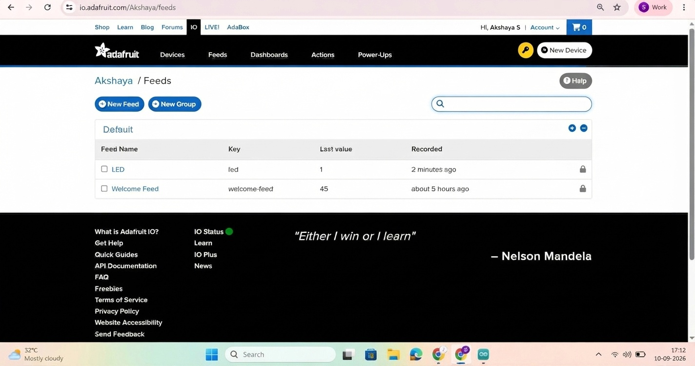
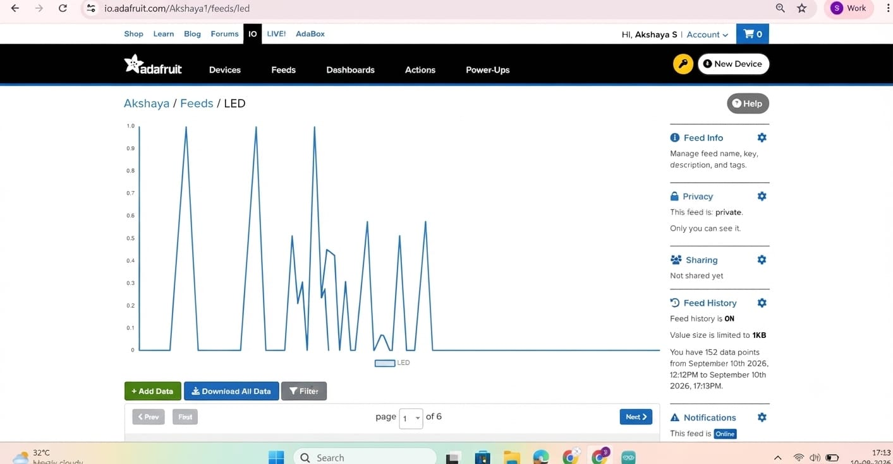
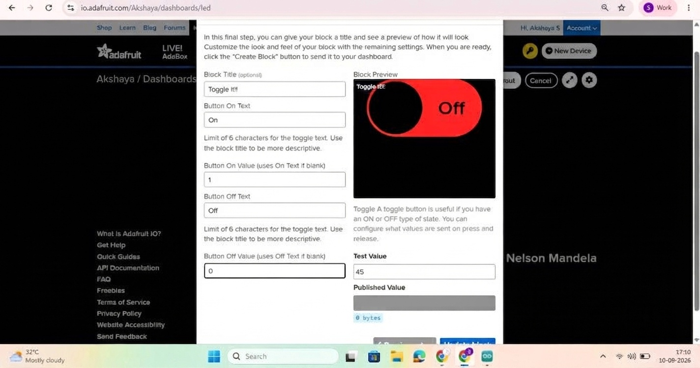
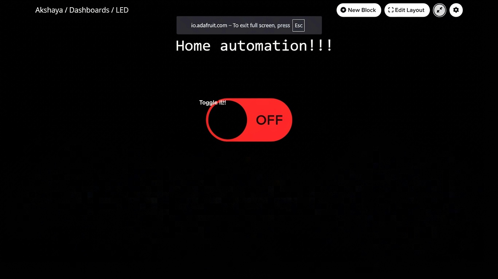
Communication flow and feed structure
Task 2 data flow: dashboard → broker → ESP32 → relay → bulb
| Item | Value |
|---|---|
| Feed name / key | LED / led |
| MQTT topic | <AIO_USERNAME>/feeds/led |
| Payload | 1 = ON, 0 = OFF |
| Broker | io.adafruit.com, port 1883 (8883 TLS) |
Complete ESP32 source code
This sketch is also used unchanged in Task 3. Credentials are placed in the sketch for the lab demo. They must never be pushed to a public repository, so use placeholders as shown.
// ---- Config ----
#define IO_USERNAME "YOUR_AIO_USERNAME"
#define IO_KEY "YOUR_AIO_KEY"
#define WIFI_SSID "YOUR_WIFI_NAME"
#define WIFI_PASS "YOUR_WIFI_PASSWORD"
#include "AdafruitIO_WiFi.h"
AdafruitIO_WiFi io(IO_USERNAME, IO_KEY, WIFI_SSID, WIFI_PASS);
// Feed "LED" = MQTT topic IO_USERNAME/feeds/led
AdafruitIO_Feed *ledFeed = io.feed("LED");
const int RELAY_PIN = 26; // relay IN pin
const int LED_PIN = 2; // onboard LED
// Called every time a new value arrives on the feed
void handleRelay(AdafruitIO_Data *data) {
int value = data->toInt();
Serial.print("Adafruit IO value: ");
Serial.println(value);
if (value == 1) {
digitalWrite(RELAY_PIN, HIGH);
digitalWrite(LED_PIN, HIGH);
Serial.println("Relay ON -> Bulb ON");
} else {
digitalWrite(RELAY_PIN, LOW);
digitalWrite(LED_PIN, LOW);
Serial.println("Relay OFF -> Bulb OFF");
}
}
void setup() {
Serial.begin(115200);
pinMode(RELAY_PIN, OUTPUT);
pinMode(LED_PIN, OUTPUT);
digitalWrite(RELAY_PIN, LOW); // start with bulb OFF
Serial.print("Connecting to Adafruit IO");
io.connect(); // Wi-Fi + MQTT connection
ledFeed->onMessage(handleRelay); // subscribe + register callback
while (io.status() < AIO_CONNECTED) { Serial.print("."); delay(500); }
Serial.println();
Serial.println(io.statusText());
ledFeed->get(); // ask for the last stored value
}
void loop() {
io.run(); // keeps MQTT alive and processes incoming messages
}Explanation of the important code sections
AdafruitIO_WiFi io(...)holds the username, key and Wi-Fi details, so one object manages both the Wi-Fi and MQTT connection.io.feed("LED")links the sketch to the feed, which is the MQTT topic.onMessage(handleRelay)subscribes to the feed. The function runs automatically whenever the broker delivers a value.handleRelay()converts the payload to an integer and writes the relay pin HIGH for 1 and LOW otherwise. Serial logs record every change.io.run()must be called constantly inloop(). Without it the connection drops and no messages arrive. Avoid longdelay()calls here.
Hardware setup: LED first, then the relay-switched 230V bulb
The ESP32 cannot switch mains voltage, so a relay is used as an electrically isolated switch. The ESP32 drives the relay's low-voltage input, and the relay's contacts open or close the live wire to the bulb.
| ESP32 | Relay module | Notes |
|---|---|---|
| GPIO 26 | IN | Control signal, HIGH = relay ON |
| VIN (5V) | VCC | Relay coil power |
| GND | GND | Common ground |
| — | COM / NO | In series with the live wire to the bulb holder; neutral goes directly to the holder |
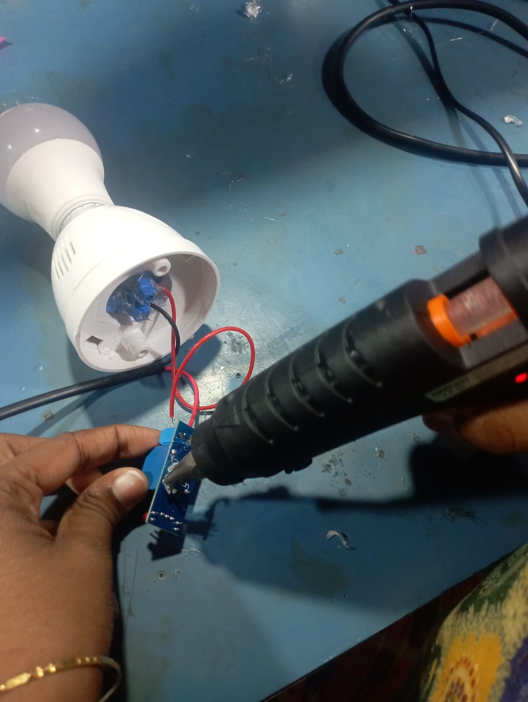
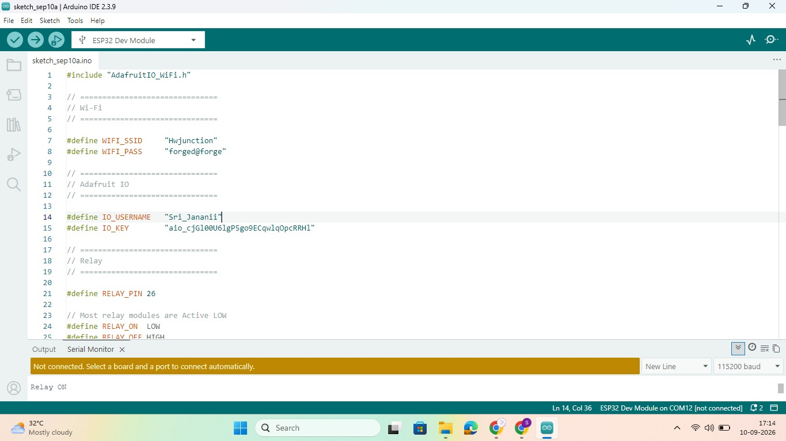
Hardware photographs, dashboard control and demo videos
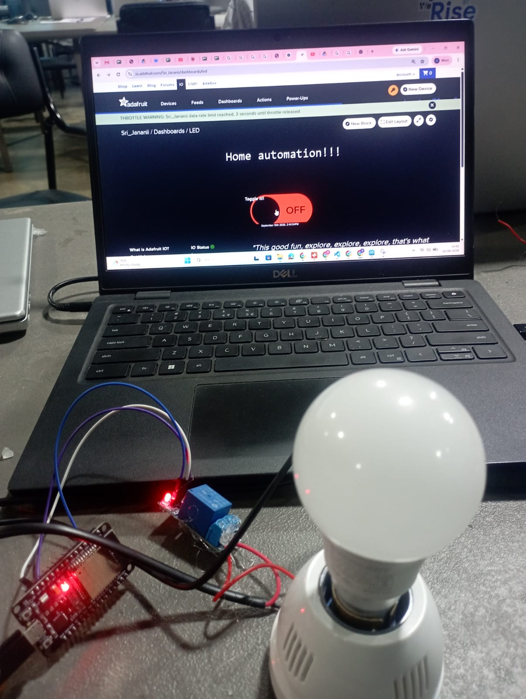

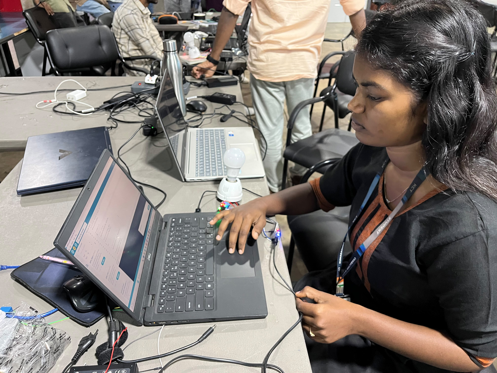
Demo 1 — dashboard toggle switching the bulb ON and OFF
Demo 2 — final confirmation after the fix
Problems encountered and solutions implemented
| Problem | Diagnosis | Solution |
|---|---|---|
| Bulb switched unreliably from the dashboard | Serial Monitor showed correct values arriving, so the code and MQTT were fine. The fault was a poorly soldered joint on the relay | Desoldered, cleaned and re-tinned the joint, soldered it again securely, then added hot glue for insulation and strain relief |
| ESP32 stuck while connecting to Adafruit IO | Wrong username/key or 5 GHz Wi-Fi | Copied the key again from "My Key" and used a 2.4 GHz network |
| Feed name mismatch | Feed key in code must match the feed key on the dashboard | Used the exact feed name LED in both places |
| Relay state wrong after reboot | Pin floating at startup | Set the pin LOW in setup() and called ledFeed->get() to resync with the last value |
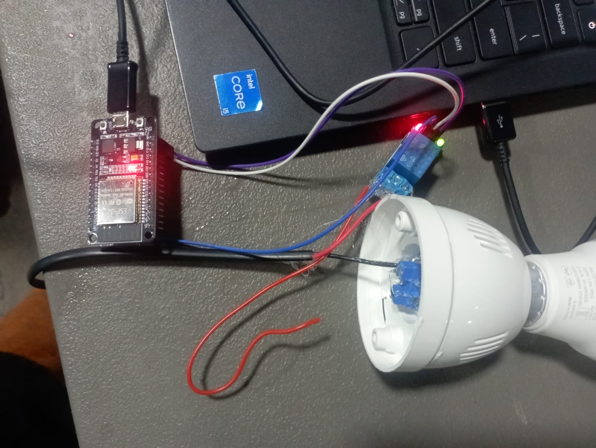
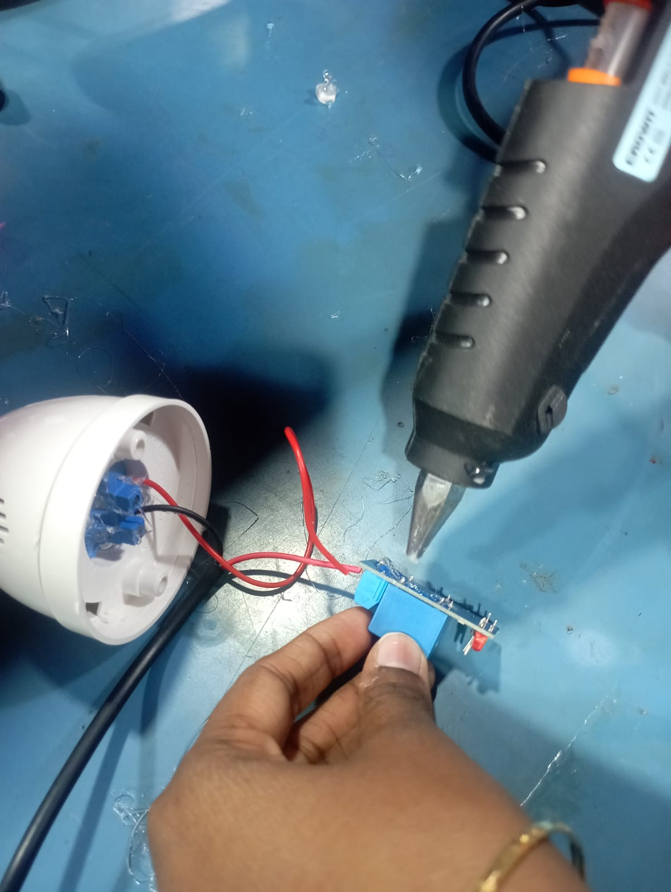
Reflection
Publish/subscribe separates the sender from the receiver, so the dashboard and the ESP32 never need to know about each other. The feed is the contract between them. The most useful lesson was debugging: when the logs are correct but the behaviour is not, check the hardware first.
Result: a 230V bulb and an LED controlled reliably over MQTT from a live Adafruit IO dashboard through a relay driven by the ESP32.
Access the source code and documentation for Task 2 — the MQTT/Adafruit IO relay sketch, dashboard and feed screenshots, wiring photos and demo videos.
View GitHub Repository ↗IFTTT + Adafruit IO — Voice-Controlled IoT Automation
- Objective
- Concepts
- Hardware & software
- Applets
- Data flow
- Code
- Screenshots & photos
- Testing
- Problems
- Reflection
- Learnings
Objective of the IoT automation
The objective was to control the same relay-switched 230V bulb from Task 2 by voice only. Saying "Ok Google, activate lights on" or "lights off" should switch the bulb, with no dashboard, button or physical switch. The goal was to add a new input method without changing the ESP32 hardware or code.
Concepts: IoT automation, IFTTT and trigger → action
IoT automation means a system reacts to an event by itself, without a person operating each device. Here the event is a spoken phrase, and the reaction is a change in a physical device.
IFTTT (If This Then That) is a no-code service that connects different online services. It was used because it already has a Google Assistant integration and an Adafruit IO integration, so I did not have to write or host any voice-assistant code.
Role of Adafruit IO: it is the meeting point. IFTTT writes a value to the LED feed, and Adafruit IO's broker delivers it to the subscribed ESP32. The ESP32 cannot receive anything directly from IFTTT, so the feed acts as the bridge between the cloud service and the device.
Hardware and software used
Hardware
- ESP32 board (same as Task 2)
- 5V relay module
- 230V bulb and holder
- Phone with Google Assistant
Software / services
- IFTTT account (two applets)
- Google Assistant
- Adafruit IO feed "LED"
- Arduino IDE, Serial Monitor
IFTTT applet, trigger and action
| Applet 1 — lights on | Applet 2 — lights off | |
|---|---|---|
| Trigger (If This) | Google Assistant → Activate scene → "lights on" | Google Assistant → Activate scene → "lights off" |
| Action (Then That) | Adafruit IO → Send data to feed LED | Adafruit IO → Send data to feed LED |
| Data sent | 1 | 0 |
| Voice command | "Ok Google, activate lights on" | "Ok Google, activate lights off" |
How each applet was built
- Created a new applet and selected Google Assistant as the "If This" service.
- Chose the Activate scene trigger and typed the scene name ("lights on" or "lights off").
- Chose Adafruit IO → Send data to Adafruit IO as the "Then That" action, selected the
LEDfeed and entered the value 1 or 0. - Saved, connected both accounts and repeated for the second applet.
How the trigger reaches the IoT system: data-flow diagram
Task 3 communication / data-flow diagram
Everything after the feed is identical to Task 2. The ESP32 cannot tell whether a value came from the dashboard toggle or from IFTTT, so the same handleRelay() function handles both.
ESP32 source code
The sketch is the Task 2 sketch, reused without changes. The part that makes voice control work is the feed subscription and callback:
AdafruitIO_Feed *ledFeed = io.feed("LED"); // same feed IFTTT writes to
void handleRelay(AdafruitIO_Data *data) { // runs on every IFTTT or dashboard update
int value = data->toInt(); // IFTTT sends "1" or "0"
Serial.print("Adafruit IO value: "); Serial.println(value);
digitalWrite(RELAY_PIN, value == 1 ? HIGH : LOW);
Serial.println(value == 1 ? "Relay ON -> Bulb ON" : "Relay OFF -> Bulb OFF");
}
void setup() {
/* Serial, pinMode, io.connect() as in Task 2 */
ledFeed->onMessage(handleRelay);
}
void loop() { io.run(); }The full file is task2_task3_mqtt_relay.ino, listed in full under Task 2.
IFTTT configuration, Adafruit IO feed and working prototype
IFTTT configuration screenshots
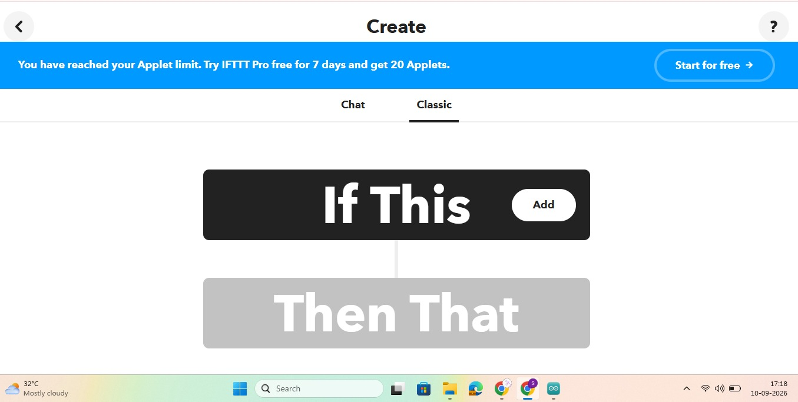
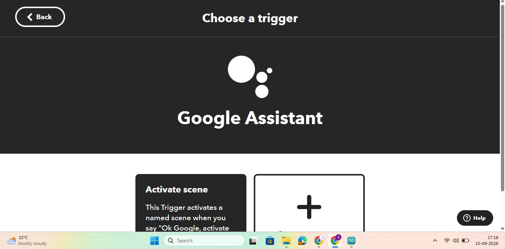
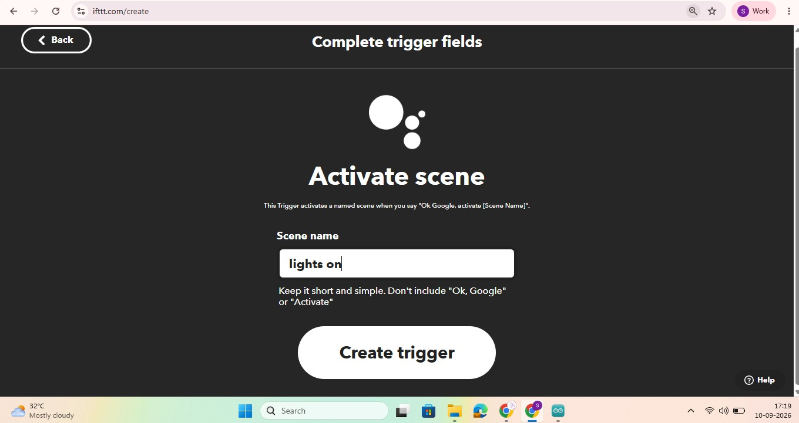
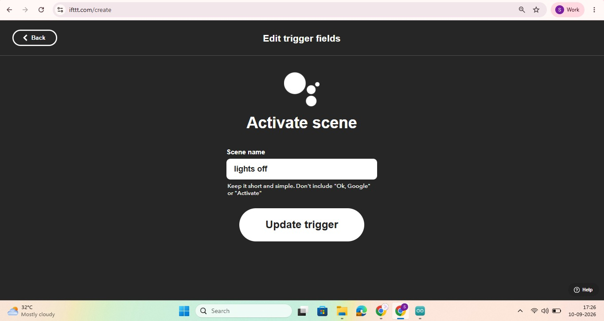
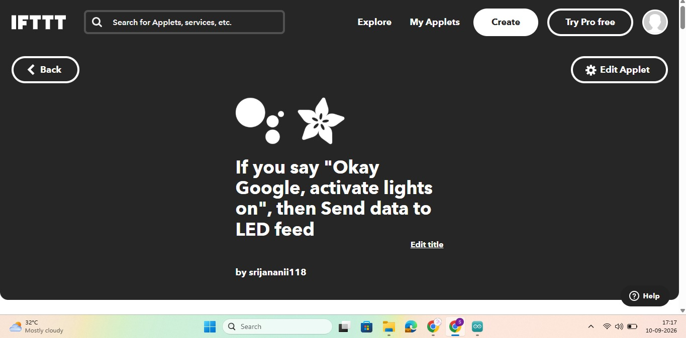
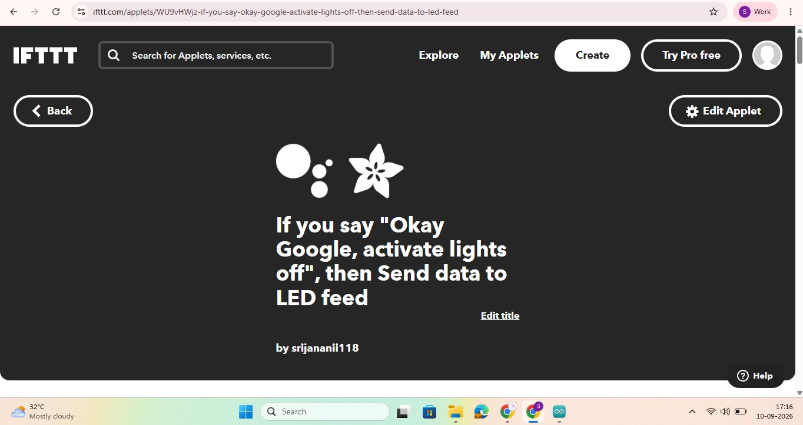
Adafruit IO dashboard / feed
The same dashboard and feed from Task 2 were used. Voice commands appear in the feed history as new 1 / 0 entries, just like toggle presses (see the feed history and dashboard screenshots in Task 2).
Working prototype
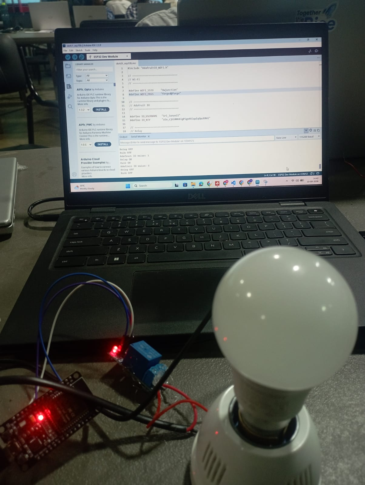
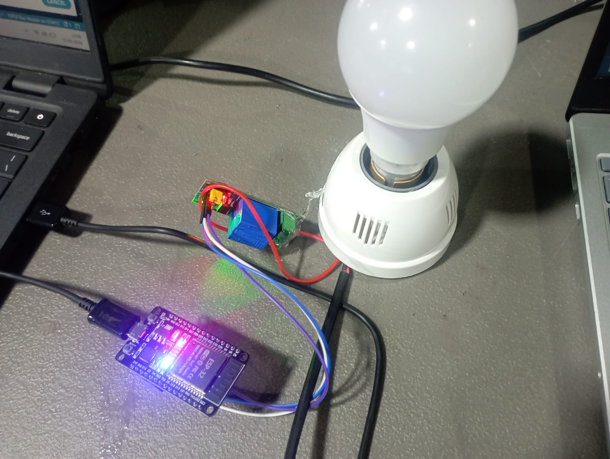
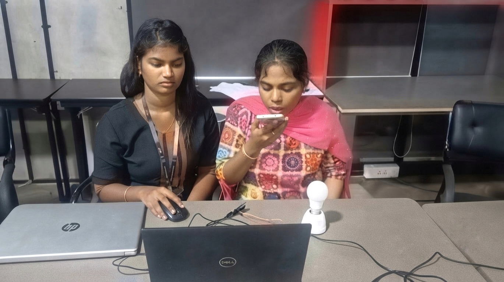
Demo video: complete automation
Full demo — spoken command to bulb response
Testing under different conditions
| Test | Expected | Observed |
|---|---|---|
| "Activate lights on" on the phone | Bulb ON | Bulb switched ON within about 1–2 seconds |
| "Activate lights off" | Bulb OFF | Bulb switched OFF within about 1–2 seconds |
| Repeating "lights on" while already ON | No change | Stayed ON; Serial logged value 1 again |
| Rapid on/off commands | Follows the last command | Bulb followed each command with a short delay |
| Dashboard toggle and voice used alternately | Both work on the same feed | Both worked; feed history shows both sources |
| ESP32 reset then command | Reconnects and responds | Reconnected to Adafruit IO and responded |
| Phone on mobile data instead of Wi-Fi | Still works (cloud path) | Worked; the phone only needs internet |
Problems and solutions
| Problem | Solution |
|---|---|
| Assistant said it could not find the scene | The spoken phrase must match the scene name exactly. Used "activate lights on" and "activate lights off" |
| Applet ran but the bulb did not respond | Checked the Adafruit IO feed history: the value was arriving, so the fault was elsewhere. Confirmed the feed name was the same LED feed |
| Delay of a second or two | Expected: the command passes through four cloud services. Accepted as a trade-off of cloud automation |
| Two applets needed for on and off | Created one applet per state, each sending its own value (1 or 0) |
Reflection
A dashboard toggle and a spoken voice command can trigger the exact same handleRelay() function without changing a single line of ESP32 code — the device never knows or cares where a feed value came from. IFTTT turned out to be a genuinely useful bridge between consumer voice assistants and IoT platforms like Adafruit IO, without needing to write any Google Assistant integration code myself.
Result: a bulb controlled entirely by voice through the chain spoken command → Google Assistant → IFTTT → Adafruit IO feed → ESP32 → relay → bulb.
Access the source code and documentation for Task 3 — the IFTTT applet screenshots, prototype photos, demo video and a README linking to the Task 2 sketch it reuses.
View GitHub Repository ↗What These Three Tasks Taught Me About IoT & Connectivity
Across all three tasks, the same ESP32 ended up talking to the outside world in three completely different ways, and each one taught me something different about how connected devices actually work.
- A device can be its own server. Task 1 showed that an ESP32 doesn't need any external platform to be controllable — it can host its own web page and respond to requests directly, with no app or cloud account involved.
- Cloud platforms add reach. Adafruit IO made the device controllable from anywhere in Task 2, not just the local network, because publish/subscribe separates the sender from the receiver — the dashboard and the ESP32 never need to know about each other, only the feed that connects them.
- One feed, many inputs. Task 3 proved that a dashboard toggle and a spoken voice command can both drive the exact same
handleRelay()function without changing a single line of ESP32 code. - Cloud automation = trigger + action. IFTTT linked Google Assistant and Adafruit IO together without me writing or hosting any voice-assistant code myself, at the cost of depending on third-party services and a small (1–2 second) delay.
- Check hardware first. The loose relay connection in Task 2 was the clearest lesson of the week — when the Serial Monitor logs look correct but the physical behaviour doesn't match, the problem is very often a soldered joint, not the code.
- Reuse pays off. Because Task 2's hardware and feed logic were built cleanly, Task 3 needed zero new wiring — just a new trigger pointed at the same existing feed.
Working through these three tasks back to back made it clear that "IoT" isn't one technique — it's a set of different ways to get a device talking to something else, each with its own trade-offs. A local web server is simple and fast but only reachable on the same network. A cloud dashboard like Adafruit IO adds reach and persistence at the cost of depending on an external service. Voice control through IFTTT adds a genuinely different, hands-free interface on top of infrastructure I'd already built. Debugging the loose relay connection in Task 2 was probably the most valuable moment of the week — it taught me to check hardware first when software logs look correct but the physical result doesn't match, a habit I'll carry into every future embedded project, including the Firebase dashboard work in Tasks 4 and 5.